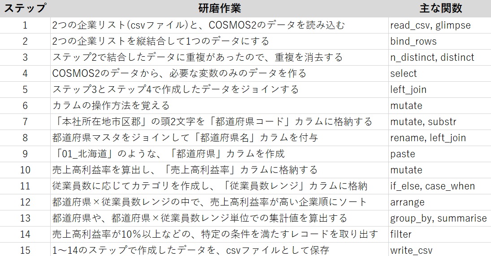
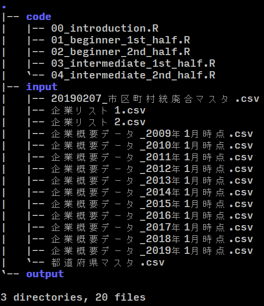
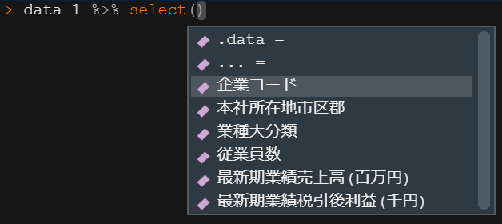
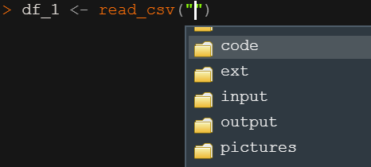

2 初級編前半
はじめに
研磨ストーリー
顧客から受領した企業リストに対して企業概要データを付与し、データの集計表や指標を算出して顧客へ渡します。

作業イメージ
添えてある数字が各ステップに対応しています。

ディレクトリ構成

| フォルダ | 中身 |
|---|---|
| . | ルートディレクトリ(data_engineering) |
| code | 本資料で使用する.Rファイル |
| input | 生データやマスタデータ |
| output | 中間ファイルや研磨後データ |
ライブラリを読み込む
- tidyverseとhereを読み込みます
library(tidyverse)
library(here)2.1 ステップ１：CSVファイルの読み込み
- read_csv
- glimpse
2.1.1 作業内容
- 以下の3種類のcsvファイルを読み込みましょう
- 企業リスト1.csv
- 企業リスト2.csv
- 企業概要データ_2019年1月時点.csv
2.1.2 read_csvでcsvデータを読み込む
- まずは企業リスト1.csvのみを読み込みます
- read_csvの引数の説明は2頁先ににまとめてあります
- カラム型を指定しないときは、カラム型をある程度自動識別し、読み込んだカラム型のメッセージが出ます
df_1 <- read_csv(file = here("input/企業リスト1.csv"),
locale = locale(encoding = "shift-jis"))
df_1
-- Column specification ------------------------------------------------------
cols(
企業コード = col_character()
)# A tibble: 500 x 1
企業コード
<chr>
1 J31299770
2 E32002046
3 D42585413
4 J39971897
5 J93122775
6 J34719839
7 L12571447
8 D42395106
9 J34594067
10 E32304350
# ... with 490 more rows- 同様にして企業リスト2.csvも読み込みます
- ここではカラム型の指定も行っています
df_2 <- read_csv(file = here("input/企業リスト2.csv"),
locale = locale(encoding = "shift-jis"),
col_types = "c")
# これでも可 col_types = cols(企業コード = col_character())
df_2# A tibble: 500 x 1
企業コード
<chr>
1 J38109080
2 D42631600
3 H42150036
4 E32060947
5 B02122602
6 J34020161
7 J34747662
8 J34830369
9 E32572710
10 J34109464
# ... with 490 more rows2.1.3 read_csvの主要な引数
| 引数 | default | 意味 |
|---|---|---|
| file | 読み込むファイルのpathを指定 | |
| col_names | TRUE | 1行目をカラム名として読み込む |
| col_types | NULL | 読み込むカラム型を指定（指定方法は後述） |
| locale | UTF-8, UTC | locale関数でencodingやタイムゾーン等を指定する |
| skip | 0 | 先頭n行を飛ばして読み込む |
| n_max | Inf | 読み込む最大行数 |
- locale関数について
- 例) locale(encoding = “shift-jis”, tz = “Japan”)
- 他にもdate_formatなどで日付表示方法などが指定できます
- timestampデータなどがあるときに有効です
2.1.4 col_typesの書き方
- 文字列で指定
- col_types = “cci”と書くことで、1列目と2列目は文字型、3列目は整数型で読み込みというように指定ができます
- 簡易的なコードを書いている場合はこちらでよいでしょう
- cols()で指定（推奨）
- col_types = cols(カラム名 = col_character()) と記述します
- データ読み込み時点からカラム型を意識しましょう
| カラム型 | 関数 | 略記 |
|---|---|---|
| 論理型 | col_logical() | l |
| 整数型 | col_integer() | i |
| 少数型 | col_double() | d |
| 文字型 | col_character() | c |
| 因子型 | col_factor() | f |
| skip | col_skip() | - |
# 例）このコードは動きません
data <- read_csv(
here("input/data.csv"),
col_types = cols(
col_1 = col_character(),
col_2 = col_integer()
))2.1.5 COSMOS2（c2）データの読み込み
- ステップ4以降で扱うCOSMOS2のデータ(企業概要データ_2019年1月時点.csv)を読み込みます
c2_201901 <- read_csv(
here("input/企業概要データ_2019年1月時点.csv"),
locale = locale(encoding = "shift-jis"))
-- Column specification ------------------------------------------------------
cols(
企業コード = col_character(),
本社所在地市区郡 = col_character(),
業種大分類 = col_character(),
`資本金(千円)` = col_double(),
従業員数 = col_double(),
最新期業績決算期年 = col_double(),
最新期業績決算期月 = col_double(),
`最新期業績売上高(百万円)` = col_double(),
`最新期業績税引後利益(千円)` = col_double(),
創業年 = col_double(),
設立年 = col_double()
)2.1.6 glimpseでデータを見る
- カラム数が多いときは、コンソールでデータを表示しても、全てのカラムを確認することができません
c2_201901# A tibble: 2,111 x 11
企業コード 本社所在地市区郡 業種大分類 `資本金(千円)` 従業員数
<chr> <chr> <chr> <dbl> <dbl>
1 G92155635 01103_北海道札幌市東区~ G:卸売・小売業，~ 862800 114
2 G92155065 13113_東京都渋谷区~ H:金融・保険業~ 3997800 2270
3 G92143569 01104_北海道札幌市白石区~ G:卸売・小売業，~ 830800 627
4 G92141220 01101_北海道札幌市中央区~ E:建設業 981800 194
5 G92190707 01109_北海道札幌市手稲区~ G:卸売・小売業，~ 419100 267
6 G92515950 01105_北海道札幌市豊平区~ F:製造業 399000 435
7 G92508571 27128_大阪府大阪市中央区~ F:製造業 53879600 745
8 G92559088 01101_北海道札幌市中央区~ K:電気・ガス・水~ 27874600 7207
9 G92552130 01104_北海道札幌市白石区~ E:建設業 3275400 1409
10 G92557890 01110_北海道札幌市清田区~ F:製造業 3815700 295
# ... with 2,101 more rows, and 6 more variables: 最新期業績決算期年 <dbl>,
# 最新期業績決算期月 <dbl>, `最新期業績売上高(百万円)` <dbl>,
# `最新期業績税引後利益(千円)` <dbl>, 創業年 <dbl>, 設立年 <dbl>glimpse
- 大規模データの確認にはglimpseを使いましょう
- カラムが縦に並ぶのでデータが確認しやすいです
glimpse(c2_201901)Rows: 2,111
Columns: 11
$ 企業コード <chr> "G92155635", "G92155065", "G92143569", "G...
$ 本社所在地市区郡 <chr> "01103_北海道札幌市東区", "13113_東京都渋谷区", "01104_北海道...
$ 業種大分類 <chr> "G:卸売・小売業，飲食", "H:金融・保険業", "G:卸売・小売業，飲食",...
$ `資本金(千円)` <dbl> 862800, 3997800, 830800, 981800, 419100, ...
$ 従業員数 <dbl> 114, 2270, 627, 194, 267, 435, 745, 7207...
$ 最新期業績決算期年 <dbl> 2018, 2018, 2018, 2018, 2018, 2018, 2018, 201...
$ 最新期業績決算期月 <dbl> 3, 3, 3, 3, 2, 3, 3, 3, 3, 12, 3, 3, 3, 12, 3...
$ `最新期業績売上高(百万円)` <dbl> 19509, 127123, 35949, 100, 42211, 18093, 82001,...
$ `最新期業績税引後利益(千円)` <dbl> 539348, 4389077, -18044, 631424, 252220, 88283, ...
$ 創業年 <dbl> 1946, 0, 1932, 1917, 0, 1943, 0, 0, 0, ...
$ 設立年 <dbl> 1951, 1948, 1951, 1951, 1971, 1946, 192...2.1.7 読み込み時に注意すべき例：０落ち
col_types = “ic”
# A tibble: 3 x 2
都道府県CODE 都道府県名
<int> <chr>
1 1 北海道
2 2 青森県
3 3 岩手県 col_types = “cc”
# A tibble: 3 x 2
都道府県CODE 都道府県名
<chr> <chr>
1 01 北海道
2 02 青森県
3 03 岩手県 - 左の例では、都道府県CODEを整数として読み込んでいるので頭の0が落ちてしまっています
- 頭の0に意味があるときは、0落ちは問題になります
- データを読み込むときは必ず生データを確認し、カラム型などを意識しましょう
2.1.8 生データの確認方法
- 生データのファイルは、任意のテキストエディタ等で確認する他にも、次のようにして確認する方法があります
- read_lines関数を使って、read_csvと同様に書くことで、生データをテキストとして1行ずつ読み込みます
read_lines(file = here("input/都道府県マスタ.csv"),
locale = locale(encoding = "shift-jis"),
n_max = 10) # 先頭から10行を読み込む [1] "都道府県CODE,都道府県名" "01,北海道"
[3] "02,青森県" "03,岩手県"
[5] "04,宮城県" "05,秋田県"
[7] "06,山形県" "07,福島県"
[9] "08,茨城県" "09,栃木県" - 都道府県CODEは文字列読み込みが良いと考えられます
2.1.9 参考１：カラム型指定tips
- カラム数が多いデータでcol_typesを手作業で入力するのは面倒なので、tipsを伝授します
c2_201901 <- read_csv(
here("input/企業概要データ_2019年1月時点.csv"),
locale = locale(encoding = "shift-jis"),
col_types = cols(
企業コード = col_character(),
本社所在地市区郡 = col_character(),
業種大分類 = col_character(),
`資本金(千円)` = col_double(),
従業員数 = col_double(),
最新期業績決算期年 = col_double(),
最新期業績決算期月 = col_double(),
`最新期業績売上高(百万円)` = col_double(),
`最新期業績税引後利益(千円)` = col_double(),
創業年 = col_double(),
設立年 = col_double()
)
)- カラム型を指定せずに100行程データを読み込み、読み込んだデータをspecという関数にかけます
- spec関数の出力をコピーして、必要があれば編集し、read_csvの引数に与えればおっけーです
read_csv(file = here("input/企業概要データ_2019年1月時点.csv"),
locale = locale(encoding = "shift-jis"),
n_max = 100) %>% spec()cols(
企業コード = col_character(),
本社所在地市区郡 = col_character(),
業種大分類 = col_character(),
`資本金(千円)` = col_double(),
従業員数 = col_double(),
最新期業績決算期年 = col_double(),
最新期業績決算期月 = col_double(),
`最新期業績売上高(百万円)` = col_double(),
`最新期業績税引後利益(千円)` = col_double(),
創業年 = col_double(),
設立年 = col_double()
)2.1.10 参考２：()付きカラムの取り扱い
glimpse(c2_201901)Rows: 2,111
Columns: 11
$ 企業コード <chr> "G92155635", "G92155065", "G92143569", "G...
$ 本社所在地市区郡 <chr> "01103_北海道札幌市東区", "13113_東京都渋谷区", "01104_北海道...
$ 業種大分類 <chr> "G:卸売・小売業，飲食", "H:金融・保険業", "G:卸売・小売業，飲食",...
$ `資本金(千円)` <dbl> 862800, 3997800, 830800, 981800, 419100, ...
$ 従業員数 <dbl> 114, 2270, 627, 194, 267, 435, 745, 7207...
$ 最新期業績決算期年 <dbl> 2018, 2018, 2018, 2018, 2018, 2018, 2018, 201...
$ 最新期業績決算期月 <dbl> 3, 3, 3, 3, 2, 3, 3, 3, 3, 12, 3, 3, 3, 12, 3...
$ `最新期業績売上高(百万円)` <dbl> 19509, 127123, 35949, 100, 42211, 18093, 82001,...
$ `最新期業績税引後利益(千円)` <dbl> 539348, 4389077, -18044, 631424, 252220, 88283, ...
$ 創業年 <dbl> 1946, 0, 1932, 1917, 0, 1943, 0, 0, 0, ...
$ 設立年 <dbl> 1951, 1948, 1951, 1951, 1971, 1946, 192...- ()付きカラムは基本的に推奨されません
- 理由は、コードの()と混同しエラーが起こるからです
- Rでは()付きカラムはバッククォートで囲むようにしてください
- コンソールでの表示もバッククォートが付いているのがわかります
2.2 ステップ２：データの縦結合
- bind_rows
2.2.1 作業内容
- ステップ1で読み込んだ以下の2つのデータを縦に結合して1つのデータにします
df_1
# A tibble: 500 x 1
企業コード
<chr>
1 J31299770
2 E32002046
3 D42585413
4 J39971897
5 J93122775
6 J34719839
7 L12571447
8 D42395106
9 J34594067
10 E32304350
# ... with 490 more rowsdf_2
# A tibble: 500 x 1
企業コード
<chr>
1 J38109080
2 D42631600
3 H42150036
4 E32060947
5 B02122602
6 J34020161
7 J34747662
8 J34830369
9 E32572710
10 J34109464
# ... with 490 more rows2.2.2 bind_rowsでデータの縦(行)結合
- 結合したいデータをbind_rowsの引数に与えることで、データを縦結合することができます
- df_1とdf_2を縦結合したデータをdf_3とします
df_3 <- bind_rows(df_1, df_2)
df_3# A tibble: 1,000 x 1
企業コード
<chr>
1 J31299770
2 E32002046
3 D42585413
4 J39971897
5 J93122775
6 J34719839
7 L12571447
8 D42395106
9 J34594067
10 E32304350
# ... with 990 more rows2.2.3 参考１：３つ以上のデータの縦結合
- 3つ以上のデータを縦結合したい場合も、2つの場合と同様にして引数に渡します
bind_rows(df_1, df_2, df_3)# A tibble: 2,000 x 1
企業コード
<chr>
1 J31299770
2 E32002046
3 D42585413
4 J39971897
5 J93122775
6 J34719839
7 L12571447
8 D42395106
9 J34594067
10 E32304350
# ... with 1,990 more rows2.2.4 参考２：カラム名不一致データの縦結合
- カラム名が一致するものはカラム名で紐づく
- 全てのデータとカラムが保持される
- 欠損値はNAとなる
d1
# A tibble: 1 x 2
col_1 col_2
<dbl> <dbl>
1 1 1d2
# A tibble: 1 x 2
col_2 col_3
<dbl> <dbl>
1 2 2bind_rows(d1, d2)# A tibble: 2 x 3
col_1 col_2 col_3
<dbl> <dbl> <dbl>
1 1 1 NA
2 NA 2 22.2.5 参考３：データの横（列）結合
- 縦結合と同様にbind_colsでデータを横(列)結合できます
- カラム名が重複すると、カラムの識別がつくようにカラム名が自動的に変更されます
bind_cols(df_1, df_2) # A tibble: 500 x 2
企業コード...1 企業コード...2
<chr> <chr>
1 J31299770 J38109080
2 E32002046 D42631600
3 D42585413 H42150036
4 J39971897 E32060947
5 J93122775 B02122602
6 J34719839 J34020161
7 L12571447 J34747662
8 D42395106 J34830369
9 J34594067 E32572710
10 E32304350 J34109464
# ... with 490 more rows- 縦結合とは異なり、行数が揃っていないと横結合することはできません
bind_cols(df_1, df_3)Error: Can't recycle `..1` (size 500) to match `..2` (size 1000).補足
- bind_colsはbase関数のcbindと同様の操作で、キーの指定をした横結合はしません
- 単純にデータが横にくっつきます
- キーを指定する横結合はステップ５で説明します
2.3 ステップ３：レコードの重複消去
- n_distinct
- distinct
2.3.1 作業内容
- 企業コードを縦結合したデータには、重複しているレコードがあります
- 重複レコードの数を調べて重複レコードを消去します
縦結合したデータdf_3で重複している企業コード
# A tibble: 226 x 1
企業コード
<chr>
1 B02122602
2 B02122602
3 B42124422
4 B42124422
5 B42539783
6 B42539783
7 B42588245
8 B42588245
9 C62177407
10 C62177407
# ... with 216 more rows2.3.2 n_distinctで重複があるか調べる
- n_distinctは、引数にデータを与えると、与えたデータから重複レコードを除いたレコード数を返す関数です
- たとえば左データでは、7行のうち2,4,5行目の計3行が重複しているので、n_distinctにかけると4が返ってきます
d# A tibble: 7 x 1
code
<chr>
1 a
2 a
3 b
4 b
5 a
6 c
7 d d %>% n_distinct()[1] 4- 元のレコード数からn_distinctの返り値（重複を除いたレコード数）を引くことで、重複していたレコード数がわかります
- この値が0であった場合は、重複レコードは1つもないということになります
d# A tibble: 7 x 1
code
<chr>
1 a
2 a
3 b
4 b
5 a
6 c
7 d nrow(d) - n_distinct(d)[1] 32.3.3 distinctで重複レコードの消去
- distinctの引数にデータを与えると、重複レコードが消去されたデータが返ってきます
- 新出レコードは残し、既出レコードは消去されます
d# A tibble: 7 x 1
code
<chr>
1 a
2 a
3 b
4 b
5 a
6 c
7 d d %>% distinct()# A tibble: 4 x 1
code
<chr>
1 a
2 b
3 c
4 d 2.3.4 企業コードの重複確認と重複消去
- 企業コードの重複数を確認し、重複を消去します
- 重複を消去したデータを、df_3_distinctとします
重複レコード数の確認
# もとのデータ数 - 重複消去後のデータ数 = 重複データ数
nrow(df_3) - n_distinct(df_3)[1] 113df_3_distinct <- df_3 %>% distinct()
nrow(df_3_distinct)[1] 8872.3.5 参考１：複数カラムデータの重複消去
- たとえば左のような複数カラムデータがあるとします
- カラムcol_1の重複しているレコードを消去するには、distinctの引数に重複消去するカラム名を与えます
d# A tibble: 4 x 3
col_1 col_2 col_3
<dbl> <chr> <chr>
1 1 a 東京
2 2 a 滋賀
3 2 b 大阪
4 2 a 滋賀 d %>% distinct(col_1)# A tibble: 2 x 1
col_1
<dbl>
1 1
2 2カラムcol_2, col_3が消えてしまいました。
- 引数.keep_all = TRUEとすることによって、重複消去したカラム以外のカラムも残すことができます。
d# A tibble: 4 x 3
col_1 col_2 col_3
<dbl> <chr> <chr>
1 1 a 東京
2 2 a 滋賀
3 2 b 大阪
4 2 a 滋賀 d %>% distinct(col_1, .keep_all = TRUE)# A tibble: 2 x 3
col_1 col_2 col_3
<dbl> <chr> <chr>
1 1 a 東京
2 2 a 滋賀 - 複数のカラムを引数に与えると、与えたカラムのレコードの積集合が重複していた時、レコードが消去されます
d# A tibble: 4 x 3
col_1 col_2 col_3
<dbl> <chr> <chr>
1 1 a 東京
2 2 a 滋賀
3 2 b 大阪
4 2 a 滋賀 d %>% distinct(col_1, col_2, col_3)# A tibble: 3 x 3
col_1 col_2 col_3
<dbl> <chr> <chr>
1 1 a 東京
2 2 a 滋賀
3 2 b 大阪 2.4 ステップ４：カラムの選択
- select
2.4.1 作業内容
- c2のデータから必要なカラムのみを抽出します
c2_201901 %>% glimpse()Rows: 2,111
Columns: 11
$ 企業コード <chr> "G92155635", "G92155065", "G92143569", "G...
$ 本社所在地市区郡 <chr> "01103_北海道札幌市東区", "13113_東京都渋谷区", "01104_北海道...
$ 業種大分類 <chr> "G:卸売・小売業，飲食", "H:金融・保険業", "G:卸売・小売業，飲食",...
$ `資本金(千円)` <dbl> 862800, 3997800, 830800, 981800, 419100, ...
$ 従業員数 <dbl> 114, 2270, 627, 194, 267, 435, 745, 7207...
$ 最新期業績決算期年 <dbl> 2018, 2018, 2018, 2018, 2018, 2018, 2018, 201...
$ 最新期業績決算期月 <dbl> 3, 3, 3, 3, 2, 3, 3, 3, 3, 12, 3, 3, 3, 12, 3...
$ `最新期業績売上高(百万円)` <dbl> 19509, 127123, 35949, 100, 42211, 18093, 82001,...
$ `最新期業績税引後利益(千円)` <dbl> 539348, 4389077, -18044, 631424, 252220, 88283, ...
$ 創業年 <dbl> 1946, 0, 1932, 1917, 0, 1943, 0, 0, 0, ...
$ 設立年 <dbl> 1951, 1948, 1951, 1951, 1971, 1946, 192...2.4.2 必要なカラム
- 必要なカラムは次の6つです
- 企業コード
- 本社所在地市区郡
- 業種大分類
- 従業員数
- 最新期業績売上高(百万円)
- 最新期業績税引後利益(千円)
- 今c2データにあるカラムは以下の11個です
c2_201901 %>% colnames() [1] "企業コード" "本社所在地市区郡"
[3] "業種大分類" "資本金(千円)"
[5] "従業員数" "最新期業績決算期年"
[7] "最新期業績決算期月" "最新期業績売上高(百万円)"
[9] "最新期業績税引後利益(千円)" "創業年"
[11] "設立年" 2.4.3 selectでカラムの選択
- データとカラム名をselectの引数に渡すことで、データから選択したカラムを抽出することができます
c2_201901 %>%
select("企業コード", "本社所在地市区郡", "業種大分類",
"従業員数", `最新期業績売上高(百万円)`,
`最新期業績税引後利益(千円)`) %>%
glimpse()Rows: 2,111
Columns: 6
$ 企業コード <chr> "G92155635", "G92155065", "G92143569", "G...
$ 本社所在地市区郡 <chr> "01103_北海道札幌市東区", "13113_東京都渋谷区", "01104_北海道...
$ 業種大分類 <chr> "G:卸売・小売業，飲食", "H:金融・保険業", "G:卸売・小売業，飲食",...
$ 従業員数 <dbl> 114, 2270, 627, 194, 267, 435, 745, 7207...
$ `最新期業績売上高(百万円)` <dbl> 19509, 127123, 35949, 100, 42211, 18093, 82001,...
$ `最新期業績税引後利益(千円)` <dbl> 539348, 4389077, -18044, 631424, 252220, 88283, ...- 変数を選択したデータをc2_201901_selectedとします
c2_201901_selected <- c2_201901 %>%
select("企業コード",
"本社所在地市区郡",
"業種大分類",
"従業員数",
`最新期業績売上高(百万円)`,
`最新期業績税引後利益(千円)`)
c2_201901_selected# A tibble: 2,111 x 6
企業コード 本社所在地市区郡 業種大分類 従業員数 `最新期業績売上高(百万円)`~
<chr> <chr> <chr> <dbl> <dbl>
1 G92155635 01103_北海道札幌市東区~ G:卸売・小売業，~ 114 19509
2 G92155065 13113_東京都渋谷区~ H:金融・保険業~ 2270 127123
3 G92143569 01104_北海道札幌市白石区~ G:卸売・小売業，~ 627 35949
4 G92141220 01101_北海道札幌市中央区~ E:建設業 194 100
5 G92190707 01109_北海道札幌市手稲区~ G:卸売・小売業，~ 267 42211
6 G92515950 01105_北海道札幌市豊平区~ F:製造業 435 18093
7 G92508571 27128_大阪府大阪市中央区~ F:製造業 745 82001
8 G92559088 01101_北海道札幌市中央区~ K:電気・ガス・水~ 7207 100
9 G92552130 01104_北海道札幌市白石区~ E:建設業 1409 23288
10 G92557890 01110_北海道札幌市清田区~ F:製造業 295 61249
# ... with 2,101 more rows, and 1 more variable:
# `最新期業績税引後利益(千円)` <dbl>2.4.4 参考１：不要な読み込みはしない
- 不要カラムが事前に分かっている場合は、(特に大規模データでは)データ読み込み時点で対処した方が効率的です
# 不要なカラムはcol_skip()として読み込まないようにする
c2_201901_selected <- read_csv(
here("input/企業概要データ_2019年1月時点.csv"),
locale = locale(encoding = "shift-jis"),
col_types = cols(
企業コード = col_character(),
本社所在地市区郡 = col_character(),
業種大分類 = col_character(),
`資本金(千円)` = col_double(),
従業員数 = col_double(),
最新期業績決算期年 = col_skip(), # 不要
最新期業績決算期月 = col_skip(), # 不要
`最新期業績売上高(百万円)` = col_double(),
`最新期業績税引後利益(千円)` = col_double(),
創業年 = col_skip(), # 不要
設立年 = col_skip() # 不要
)
)2.4.5 参考２：ベクトルで変数の選択
want_var <- c("col_1", "col_2")
d %>% select(any_of(want_var))
d %>% select(all_of(want_var))- 上記のようにカラムをベクトルで選択することもできますが、any_ofとall_ofを使い分ける必要があります
- any_of
- カラム名ベクトルに含まれるカラムを選択します
- 存在しないカラムがあってもエラーになりません
- all_of
- カラム名ベクトルの全てのカラムを選択します
- 存在しないカラムがある場合はエラーになります
次頁で例を示します。
- any_ofは存在しないカラムがあってもエラーが出ない
want_var <- c("企業コード", "従業員数", "企業規模")
c2_201901 %>% select(any_of(want_var)) %>% head(2)# A tibble: 2 x 2
企業コード 従業員数
<chr> <dbl>
1 G92155635 114
2 G92155065 2270- all_ofは存在しないカラムがあるとエラーが出る
want_var <- c("企業コード", "従業員数", "企業規模")
c2_201901 %>% select(all_of(want_var)) %>% head(2)Error: Can't subset columns that don't exist.
x Column `企業規模` doesn't exist.2.4.6 参考３：変数消去
- 選択した変数を消去したい場合は、変数名にマイナスをつけて ー変数名と書きます
d# A tibble: 3 x 3
x y z
<int> <int> <int>
1 1 4 7
2 2 5 8
3 3 6 9d %>% select(-"y", -"z") # A tibble: 3 x 1
x
<int>
1 1
2 2
3 3- ベクトルで変数消去することも可能です
- マイナスはall_ofかany_ofの前につけます
d# A tibble: 3 x 3
x y z
<int> <int> <int>
1 1 4 7
2 2 5 8
3 3 6 9del_var <- c("y", "z")
d %>% select(-all_of(del_var))# A tibble: 3 x 1
x
<int>
1 1
2 2
3 32.4.7 参考４：クォート
- selectにおいて、カラム名はクォーテーションで囲んでも、囲まなくてもOKです
- ただしカラム名に括弧がある場合などは例外で、バッククォート「`」で囲む必要があります
- カラム名の括弧がコードの括弧と混同するのを防ぐためです
c2_201901 %>%
select(企業コード, "従業員数", `最新期業績売上高(百万円)`) %>%
head(3)# A tibble: 3 x 3
企業コード 従業員数 `最新期業績売上高(百万円)`
<chr> <dbl> <dbl>
1 G92155635 114 19509
2 G92155065 2270 127123
3 G92143569 627 359492.5 ステップ５：データの横結合
- left_join
2.5.1 作業内容
- ステップ3と4で作成した以下の2つのデータを、企業コードをキーにして結合(joinやmergeとも言う)します
df_3_distinct# A tibble: 887 x 1
企業コード
<chr>
1 J31299770
2 E32002046
3 D42585413
4 J39971897
5 J93122775
6 J34719839
7 L12571447
8 D42395106
9 J34594067
10 E32304350
# ... with 877 more rowsc2_201901_selected# A tibble: 2,111 x 7
企業コード 本社所在地市区郡 業種大分類 `資本金(千円)` 従業員数
<chr> <chr> <chr> <dbl> <dbl>
1 G92155635 01103_北海道札幌市東区~ G:卸売・小売業，~ 862800 114
2 G92155065 13113_東京都渋谷区~ H:金融・保険業~ 3997800 2270
3 G92143569 01104_北海道札幌市白石区~ G:卸売・小売業，~ 830800 627
4 G92141220 01101_北海道札幌市中央区~ E:建設業 981800 194
5 G92190707 01109_北海道札幌市手稲区~ G:卸売・小売業，~ 419100 267
6 G92515950 01105_北海道札幌市豊平区~ F:製造業 399000 435
7 G92508571 27128_大阪府大阪市中央区~ F:製造業 53879600 745
8 G92559088 01101_北海道札幌市中央区~ K:電気・ガス・水~ 27874600 7207
9 G92552130 01104_北海道札幌市白石区~ E:建設業 3275400 1409
10 G92557890 01110_北海道札幌市清田区~ F:製造業 3815700 295
# ... with 2,101 more rows, and 2 more variables:
# `最新期業績売上高(百万円)` <dbl>, `最新期業績税引後利益(千円)` <dbl>2.5.2 いろいろな結合方法
left_join

left_join

right_join

full_join

inner_join

anti_join

2.5.3 left_joinのイメージ
色付きカラムが企業コードだと思ってください。
- left_joinでは第一引数の行を全て保持します
- 第二引数の行は、キーが第一引数と一致した行のみ残します
- 第二引数のカラムは、キーが一致しない場合NAとなります
2.5.4 結合する方法を決める
- df_3_distinctの企業コードに対してc2のデータを紐づけたいので、ここではleft_joinを使って結合します
df_3_distinct# A tibble: 887 x 1
企業コード
<chr>
1 J31299770
2 E32002046
3 D42585413
4 J39971897
5 J93122775
6 J34719839
7 L12571447
8 D42395106
9 J34594067
10 E32304350
# ... with 877 more rowsc2_201901_selected # A tibble: 2,111 x 7
企業コード 本社所在地市区郡 業種大分類 `資本金(千円)` 従業員数
<chr> <chr> <chr> <dbl> <dbl>
1 G92155635 01103_北海道札幌市東区~ G:卸売・小売業，~ 862800 114
2 G92155065 13113_東京都渋谷区~ H:金融・保険業~ 3997800 2270
3 G92143569 01104_北海道札幌市白石区~ G:卸売・小売業，~ 830800 627
4 G92141220 01101_北海道札幌市中央区~ E:建設業 981800 194
5 G92190707 01109_北海道札幌市手稲区~ G:卸売・小売業，~ 419100 267
6 G92515950 01105_北海道札幌市豊平区~ F:製造業 399000 435
7 G92508571 27128_大阪府大阪市中央区~ F:製造業 53879600 745
8 G92559088 01101_北海道札幌市中央区~ K:電気・ガス・水~ 27874600 7207
9 G92552130 01104_北海道札幌市白石区~ E:建設業 3275400 1409
10 G92557890 01110_北海道札幌市清田区~ F:製造業 3815700 295
# ... with 2,101 more rows, and 2 more variables:
# `最新期業績売上高(百万円)` <dbl>, `最新期業績税引後利益(千円)` <dbl>2.5.5 left_joinでデータの結合
- キーとするカラムは引数byで指定します
- ジョインしたデータをdata_1とします
data_1 <-
df_3_distinct %>%
left_join(c2_201901_selected, by = "企業コード")
data_1 %>% glimpse()Rows: 887
Columns: 7
$ 企業コード <chr> "J31299770", "E32002046", "D42585413", "J...
$ 本社所在地市区郡 <chr> "13103_東京都港区", "27123_大阪府大阪市淀川区", "13103_東京都...
$ 業種大分類 <chr> "I:不動産業", "L:サービス業", "J:運輸・通信業", "L:サービス業...
$ `資本金(千円)` <dbl> 931300, 1098300, 6120900, 15432800, 99049...
$ 従業員数 <dbl> 64, 1120, 216, 31059, 314, 1167, 880, 15...
$ `最新期業績売上高(百万円)` <dbl> 6555, 100, 31746, 334093, 69308, 54667, 107643,...
$ `最新期業績税引後利益(千円)` <dbl> 910536, 1775694, 408523, 2544502, 763986, 319544...2.5.6 参考：right_join
- 引数に与えるデータの順番を変えれば、right_joinを使っても、先ほどと同様の結合をすることができます
- left_joinとright_joinは混在させないようにしましょう（混在すると可読性が下がってしまうため）
c2_201901_selected %>%
right_join(df_3_distinct, by = "企業コード") %>%
glimpse()Rows: 887
Columns: 7
$ 企業コード <chr> "G92155065", "G92515950", "G92543356", "G...
$ 本社所在地市区郡 <chr> "13113_東京都渋谷区", "01105_北海道札幌市豊平区", "01101_北海...
$ 業種大分類 <chr> "H:金融・保険業", "F:製造業", "E:建設業", "F:製造業", "G...
$ `資本金(千円)` <dbl> 3997800, 399000, 252800, 16500900, 931630...
$ 従業員数 <dbl> 2270, 435, 903, 1278, 455, 2547, 606, 80...
$ `最新期業績売上高(百万円)` <dbl> 127123, 18093, 16223, 112638, 361158, 116457, 1...
$ `最新期業績税引後利益(千円)` <dbl> 4389077, 88283, 515387, 442755, 12313348, 537846...2.6 箸休めスライド
- relocate
- Tabキーで補完
2.6.1 relocateでカラムを少しだけ並び替え
- relocateは選択したカラムを先頭に移動できる関数です
- data_1で従業員数カラムは4番目にありますが、従業員数カラムに注目したい場合1番目にあると嬉しいです
- 本資料では見栄えのために今後使用していきます
data_1 %>%
head(3)# A tibble: 3 x 7
企業コード 本社所在地市区郡 業種大分類 `資本金(千円)` 従業員数
<chr> <chr> <chr> <dbl> <dbl>
1 J31299770 13103_東京都港区 I:不動産業 931300 64
2 E32002046 27123_大阪府大阪市淀川区~ L:サービス業~ 1098300 1120
3 D42585413 13103_東京都港区 J:運輸・通信業~ 6120900 216
# ... with 2 more variables: `最新期業績売上高(百万円)` <dbl>,
# `最新期業績税引後利益(千円)` <dbl>data_1 %>% head(3) %>%
relocate(従業員数)# A tibble: 3 x 7
従業員数 企業コード 本社所在地市区郡 業種大分類 `資本金(千円)`
<dbl> <chr> <chr> <chr> <dbl>
1 64 J31299770 13103_東京都港区 I:不動産業 931300
2 1120 E32002046 27123_大阪府大阪市淀川区~ L:サービス業~ 1098300
3 216 D42585413 13103_東京都港区 J:運輸・通信業~ 6120900
# ... with 2 more variables: `最新期業績売上高(百万円)` <dbl>,
# `最新期業績税引後利益(千円)` <dbl>2.6.2 Tabキーで補完入力
- 関数内でTabキー(またはctrl + space)を押すと、使用できる引数候補が表示され引数の説明も表示してくれます

- データにあるカラム名もTabで参照できます
- またクォーテーション内でTABキーを押すと、作業ディレクトリのファイルやフォルダを参照できます

